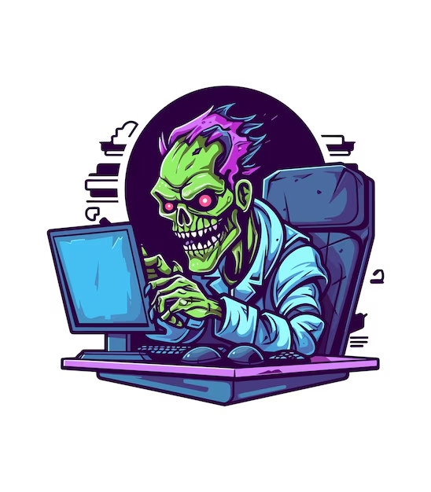

Ataques Cibernéticos y Conceptos Relacionados
Los ataques cibernéticos son intentos maliciosos de comprometer la seguridad de sistemas informáticos. A continuación, se presentan algunos conceptos clave relacionados con los ataques cibernéticos:

Conceptos Básicos
- DDoS (Ataque de Denegación de Servicio Distribuido): Un ataque que sobrecarga un sistema o red con tráfico masivo para hacerlo inaccesible.
- Ordenador Zombie: Un dispositivo infectado que puede ser controlado remotamente para realizar actividades maliciosas sin el conocimiento del propietario.
- Ciberdelincuente: Individuo que comete delitos utilizando tecnologías de la información y comunicación.
- Botmaster: El controlador de una red de ordenadores zombies (botnet).
- Botnet: Red de ordenadores zombies controlados por un botmaster para realizar ataques coordinados.
- Ransomware: Malware que cifra los datos de la víctima y exige un rescate para desbloquearlos.
Ataques y Eventos Históricos
- The Morris Worm (1988): Uno de los primeros gusanos informáticos que afectó a Internet.
- Ciberwarfare: El uso de tecnología digital en un conflicto entre estados o organizaciones.
- Stuxnet (2010): Gusano informático diseñado para atacar sistemas industriales.
- Moonlight Maze (1998): Una de las primeras operaciones de ciberespionaje a gran escala.
- Operación Aurora (2009): Ataque cibernético sofisticado contra varias empresas tecnológicas.
- WannaCry (2017): Ataque de ransomware global que afectó a miles de sistemas.
- Petya (2016): Otro notorio ataque de ransomware con impacto internacional.
- Equifax (2017): Brecha de seguridad que expuso datos de millones de consumidores.
- Cam4 (2020): Filtración masiva de datos de usuarios de la plataforma de streaming.
Otros Conceptos
- Disclaimer: Aviso legal que limita la responsabilidad en caso de uso indebido de la información.
- Freeze it into Submission: Técnica de ataque que sobrecarga un sistema hasta que se bloquea.
Es crucial mantenerse informado sobre estas amenazas y adoptar medidas de seguridad adecuadas para proteger los sistemas y la información.